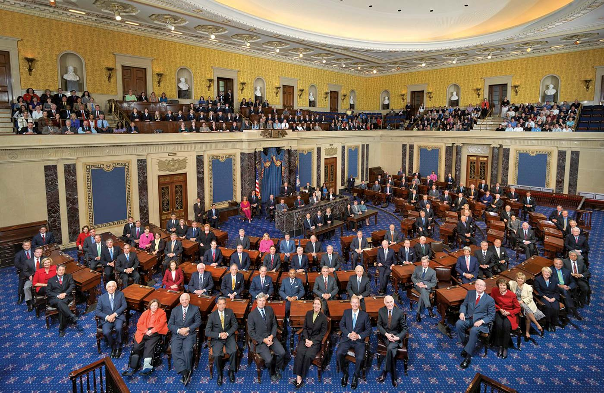
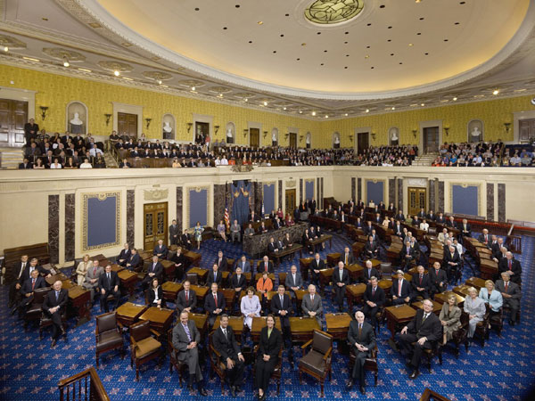

The Senate is the upper chamber of the US Congress. It is composed of 100 members, called Senators, in which two are from each of the 50 states. Senators are elected to terms of 6 years, beginning on the 3rd day of January after each regular election. Elections for Senate are staggered by state so 1/3 of seats are up at one time. While its role is crucial in the passage of legislation, it also has many other duties. One of the Senate's other crucial tasks is confirming presidential appointments, such as cabinet positions. They are also in charge of ratifying international treaties which have been negotiated by the president. With the equally representative nature of the Senate, senators are tasked with representing their state interests in political discussions. Another important authority the Senate has is its role in acquitting or convicting presidents in impeachment trials, which has been highlighted in recent years.
The United States Senate
The United States House of Representatives
The House is the lower chamber of the United States Congress. It is made up of 435 members, called “Representatives”. The number of representatives from each state is determined by the electoral votes it has. Representatives are elected to terms of 2 years, beginning on the 3rd of January after each election. Regular elections are held in even-number years. Its main task is to pass legislation alongside the Senate, which is then sent to the president to become law. There are a number of other duties the House is charged with, both administrative and procedural. Out of the two chambers, the House is the only one that can initiate revenue bills. The House can also initiate the impeachment of federal officials, including the president. Most importantly, if no presidential candidate receives a majority of electoral votes, the House is charged with choosing the winner.
About Congress
The United States Congress, which is composed of the Senate and the House of Representatives, acts as the legislative branch of the federal government. Located in Washington, D.C., both chambers serve as the keystone of the American democratic system, debating the laws that will govern our citizens. With its committees, power structure, and diverse membership, Congress is meant to be representative of the American people.